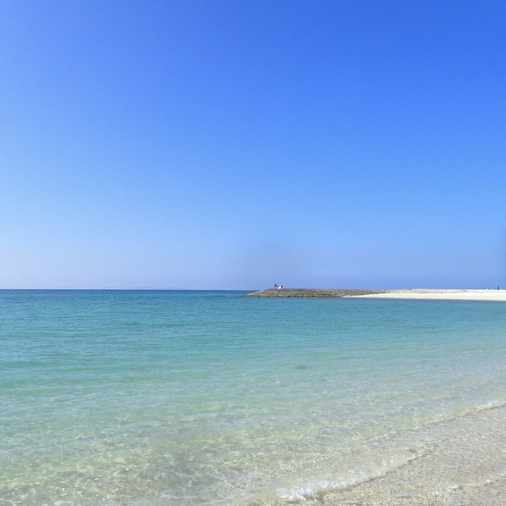

注目まとめ
営業部ではこんなことしていました。
私は2017年新卒新入社員として、ぐるなびに入社し、
3年間営業部として働いていました。
業務内容と1日のスケジュールをざっくりご紹介いたします。

キーワードはリフレッシュ！マイ趣味厳選5選
休日や時間があるとき、何に時間を使いますか？
趣味や好きなことになにか共通点がありますと、嬉しいです！
好きなことを5つ紹介させていただきます。
ジャンル別トレンド徹底解剖！
みなさん最近ハマっているものはなにかありますか？
私のトレンドをジャンル別に共有いたします。

おすすめの出汁巻き玉子3選
飲みにいくときや、食事をするとき、
メニューにあったら必ず頼んでしまう一品ありませんか？
私がついつい頼んでしまう一品は・・・出汁巻き玉子です！
この記事では私のおすすめの出汁巻き玉子3選をご紹介いたします。